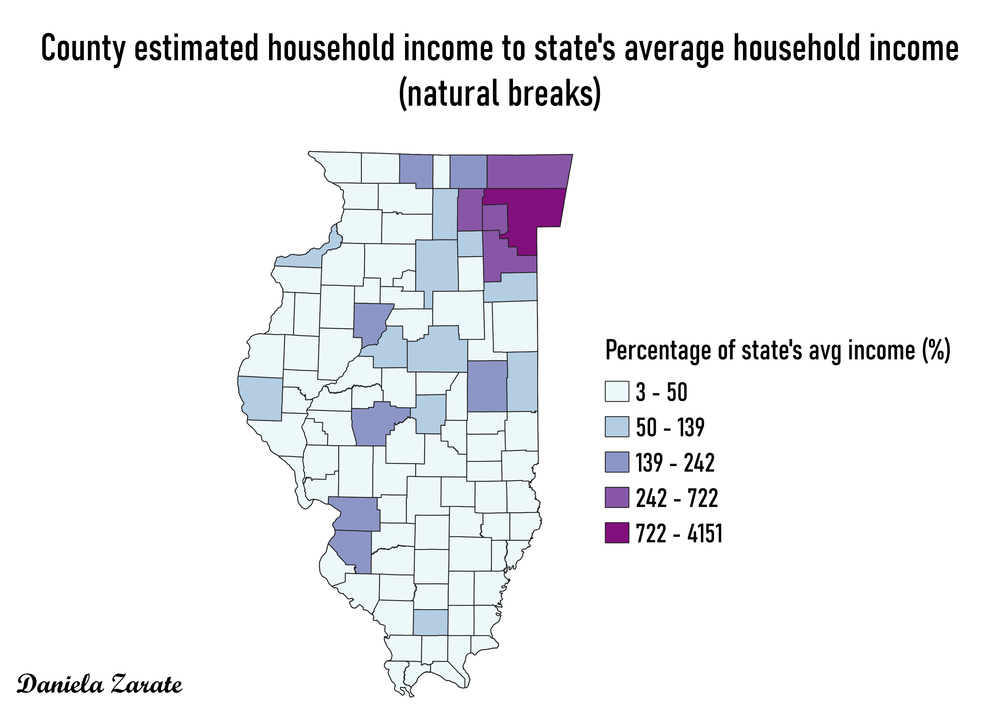
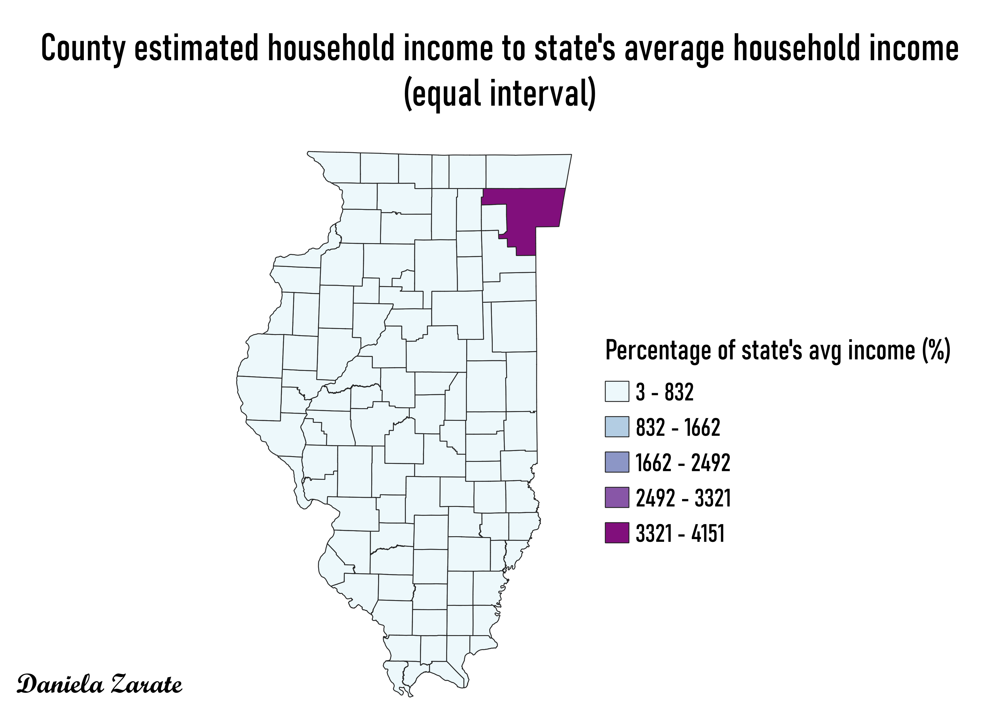
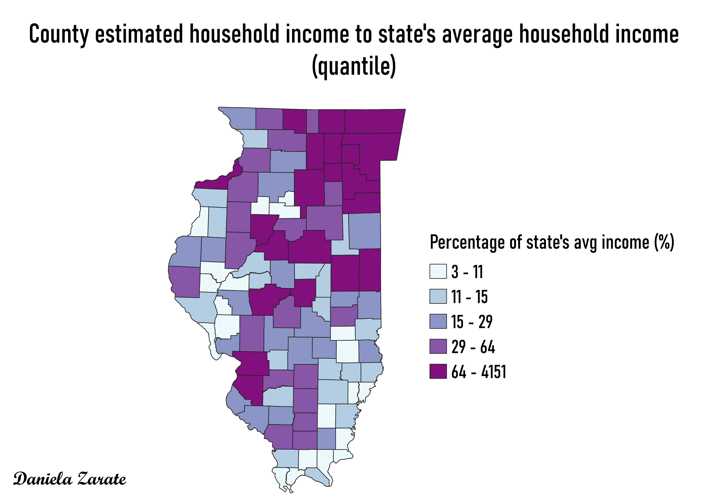

Homework 8: Census data ratios and categories
Estimated household income in Illinois' counties to the state's average household income.
This ratio shows the percentage of the state's average household income ($47,511) that each county earns. The ratio was created by dividing the county's estimated household income by the state's average household income, then it was multiplied by 100 to get a percentage. I found the state's average by adding the incomes of all counties and dividing by the number of counties.
Natural breaks
Natural breaks categorizes the data into the most optimal intervals. This categorization is useful for this map because it shows us that the majority of counties make less than 50% of the state's average household income which is consistent with the data.

Equal intervals
As the name says it, the equal interval categorization splits the data into classes with equal intervals. By doing this with the data used for the map, which goes from 3% to 4151%, this categorization splits the data into five clases of intervals of approximately 830. In this case, the data only falls under two classes so it does not make a lot of sense to have five different classes.

Quantile
Quantile categorization assigns the same number of data values to each class. In the case of the Illinois map it assign around 20 counties to each of the five classes because it has 102 counties. This categorization is useful for linearly distributed data, which is not the case of the data from the counties of Illinois.

Data used for this project
CSV dataset
Link to geojson